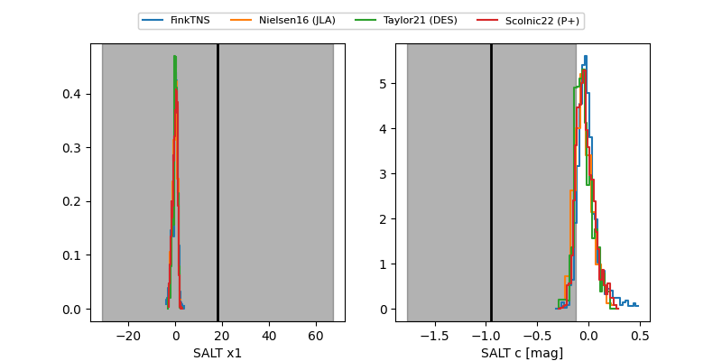

FINK: ZTF25abpolwo
Lasair: ZTF25abpolwo
ALeRCE: ZTF25abpolwo
TNS: 2025xiw
YSE: 2025xiw
2025xiw (yse,tns)
ZTF25abpolwo (ztf,fink)
PS25hsc (panstarrs)
equatorial (ra, dec) = (241.2582,+33.31570)
galactic (l, b) = (53.6085,+48.09394)

last ps1::g=19.77
1 ps1::g detections